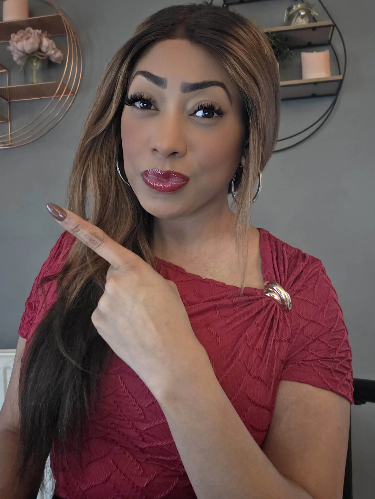

For Organisations
Relationship & emotional well-being expertise for your people
Practical support for the relationship dynamics and emotional well-being that shape how people communicate, collaborate and cope under pressure.

Outcomes
What this means for your organisation
Healthy workplaces depend on more than policies. They depend on how people communicate, regulate emotion, navigate pressure and relate to one another. Organisational programmes focus on:
- Emotional wellness and resilience
- Relationships at work
- Self-awareness
- Stress management
- Healthy communication
- Psychological safety
- Boundaries
- Burnout prevention
- Emotional regulation
- Confidence
- Personal effectiveness
Credibility
Trusted by organisations including Channel 4 and Mind.
IAPC&M Accredited Master Coach
Appointed Head of Mental Health & Well-being for IAPC&M members.
Start a conversation
Get in touch to explore what this could look like for your organisation.